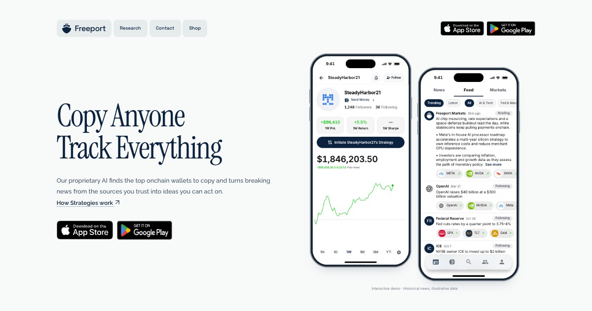

Freeport (YC F25) built an app that lets anyone copy top onchain traders. As its GTM Strategist I built the Meta ads program from scratch, bringing in 4,000 new users at a $13 average CPA, and wrote the paid and organic copy across X, TikTok and LinkedIn, from earnings coverage to outage updates.
Role: GTM Strategist, June 2026 to present